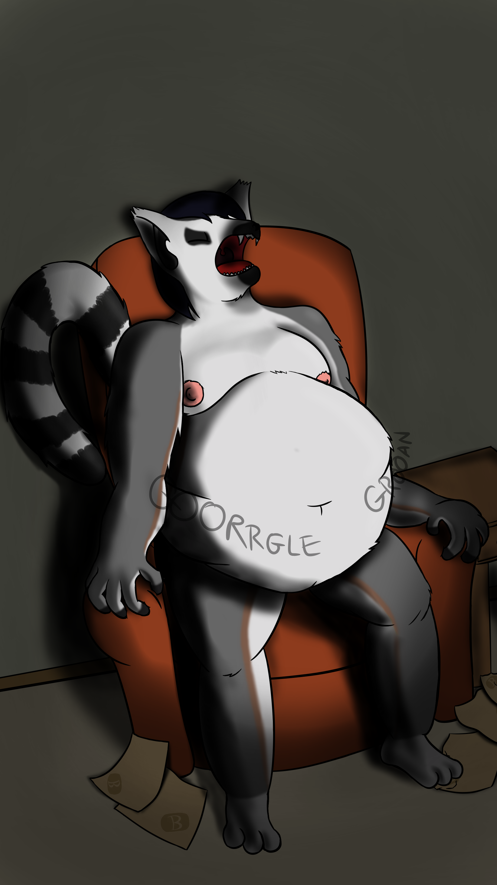

Note: the original save date on this file is 7/28/2018
A lemur character I made. I planned to make a slob edit (and make him more visibly overstuffed) but around the time this was drawn I got a second job and shortly afterwards became depressed. Yay!
I'm a contract worker now and am not depressed so I can go back to making fat kink porn, but I don't feel like working on this old piece any further.
All you need to know about the pic is this guy's backstory is his girlfriend left him and now he eats to forget and now he's a big fat fuck. I think the fact I was interested in drawing him is a good indicator of where I was at this time in my life. I still like the "depressed reluctant gainer" thing and this is definitely the hardest I've worked on a piece, so it's still something worth sharing.
Follow, misguide, stand still / Discuss, discourage
On this precious weekend / Ending this love for gentlemen only / Wealthier gentlemen only
Now that you're lonely / Too late, too late, too late, she'll be late, too late, too late...
—Phoenix - Lisztomania
◀ Previous image chronologically: Hyper Balls Back Squat (2021-4-19)